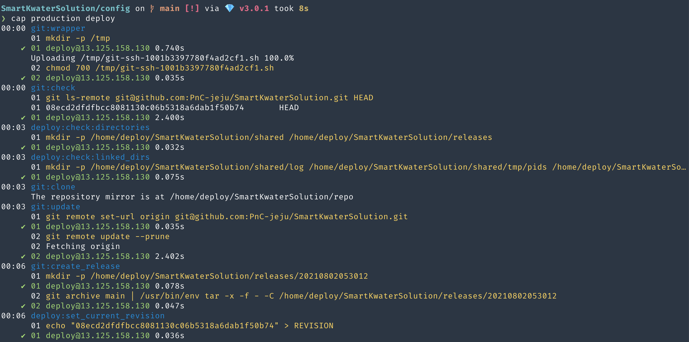
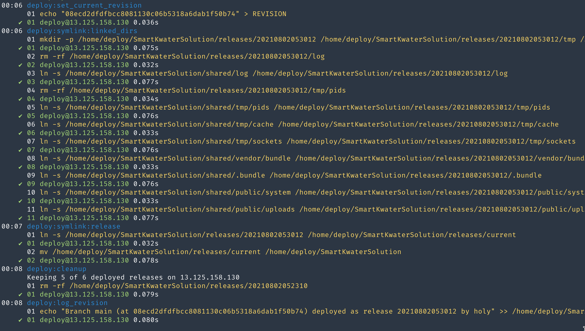

rails from scratch
Table of Contents
1 맨 처음 해야 하는것(1. Local 개발환경 만들기)
local에서 작업할수 있는 환경을 만든다. gorails에서 지시하는대로 한다. 그 다음 capistrano를 통해 운영서버에 적용하는 환경을 만들것이다. 두 환경은 하나의 rails project에서 동시에 운영된다. 아무 문제 없다. 즉 capistrano 설정을 하면 local에서 작업하지 못하고, local에서 별도로 rails new railsproject를 사용해서 local용을 만들 필요가 없다는 것이다. 하나의 rails 프로젝트에서 test하고 rails s로 local test하고 제대로 되면 운영서버로 배포하는 형태를 가지면 된다.
1.1 local 개발환경
ruby 설치(with rbenv)
rails는 ruby version을 탄다. rails와 ruby version이 궁합이 맞아야 하고, gem들도 맞아야 한다. ruby설치는 rbenv를 사용한다.
rbenv는 여러버전의 ruby를 설치할 수 있는데, 이것이 가능한것은 ruby-build라는 plugin이 있기에 가능하다. rbenv install 3.14 이런식으로 ruby를 설치하는것은 rbenv-build에 있는 rbenv-install에 의해서 가능한 것이다. pyenv도 동일한 형식이다.
brew install rbenv ruby-build
echo 'if which rbenv > dev/null; then eval "$(rbenv init -)"; fi' >> ~.zshrc source ~/.zshrc
rbenv install 3.0.1 rbenv global 3.0.1 ruby -v
git 설치와 설정
rails는 기본적으로 git init의 과정으로 local git을 설정한다. 그래서 git이 이미 system에 설치되어 있어야 하고, git에 대한 설정을 해야 한다. 그리고 github에 저장해야 하기 때문에, ssh도 만들어야 한다.
git config –global color.ui true git config –global user.name "holy" git config –global user.email "holy@fastmail.com" ssh-keygen만 해도 된다.
rails 설치
gem은 ruby를 설치하면 자동으로 같이 설치된다. gem을 이용해서 rails를 설치한다. gem install rails -v 6.1.3.2
한가지 특이한건, gem으로 설치한 rails를 사용하기 위해선 rbenv에게 rails가 설치되었다는 것을 알려줘야 한다는 것이다.
rbenv rehash를 해야만 rails를 사용할 수 있다.
Database 설치
brew install mysql brew services start mysql
nokogiri, pg를 위한 설치
원래는 다음을 실행해야 하는데, 설치가 제대로 안된다. -—다음-— sudo installer -pkg /Library/Developer/CommandLineTools/Packages/macOSSDKheadersformacOS10.14.pkg -target /
아래를 설치한다. brew install libxml2 libxslt gem install nokogiri –platform=ruby – –use-system-libraries
rails server
2 Production Server 설치
3 새로운 webapp만들기(Local server와 production을 위한 capistrano가 설치된 상황에서)
3.1 github에 project를 만든다.
3.2 rails new webapp
3.3 git push로 github에 반영
3.4 capistrano gem설치
project를 새로 만들었기 때문에 capistrano gem이 설치가 안되어 있을 것이다. capistrano를 설치해야만 deploy.rb와 deploy폴더가 만들어지고, 거기에서 github과 server에 대한 설정을 할 수 있다.
아래의 gem을 Gemfile에 설정한다.
gem 'capistrano', '~> 3.11' gem 'capistrano-rails', '~> 1.4' gem 'capistrano-passenger', '~> 0.2.0' gem 'capistrano-rbenv', '~> 2.1', '>= 2.1.4'
- bundle bundle은 Gemfile의 gem을 Users/holy.rbenv/versions/3.0.1/lib/ruby/gems/3.0.0/gems에 설치한다.
- cap install
cap install을 하면 depoly.rb와 deploy폴더가 생성되고, STAGE를 production이라고 했기 때문에 deploy/production.rb가 만들어진다. STAGES라는 것은 server를 나타낸다. 운영서버는 3개가 될 수도 있고, 4개도 될 수 있다. 각각의 이름이 있고, 각각의 deploy설정이 가능하다. cap install로 만들어지는 것은 다음과 같다.
- config/deploy.rb
- config/deploy/production.rb
- lib/capistrano/tasks
- Capfiles
bundle cap install STAGES=production
3.5 capistrano가 github과 aws와 db 접속할 수 있는 환경 설정
github check
keychain을 실행해서 github.com을 찾는다. id와 pw가 github의 id와 pw와 같은지 확인한다. 동일하지 않다면 동일하게 해준다.
github settings (capistrano는 config/deploy.rb를 참고한다.)
capistrano는 github에 접속해서 branch에 있는 source를 운영서버에 배포한다. 아래정보로 추정하면 다음과 같다. github에 있는 myapp의 main branch source를 /home/deploy/myapp에 배포하라. /home/deploy라고 한 이유는 deploy사용자의 home이기 때문이다. 즉 aws에 접속하는 계정은 deploy임을 알수 있다. aws에 접속해야 한다는 것도 알 수 있다. aws 설정정보는 production.rb에 있다.
set :application, "myapp" => project app이름 set :repourl, "git@github.com:PnC-jeju/myapp.git" => github위치 set :branch, "main" => 배포할려는 branch set :deployto, "/home/deploy/#{fetch :application}" => 배포 위치 append :linkeddirs, 'log', 'tmp/pids', 'tmp/cache', 'tmp/sockets', 'vendor/bundle', '.bundle', 'public/system', 'public/uploads' set :keepreleases, 5
aws와 db환경 설정(config/deploy/production.rb)
production.rb의 설정은 단순하다. 아래처럼 server의 위치와 loginid만 기술한다.
server "13.125.158.130", user: "deploy", roles: %w{app db web}
git과 aws의 password?
git과 aws에 접속하기 위해서 password가 필요하다. 이것을 하기 위해선 다음과 같은 작업이 필요하다.
ssh-add ~/.ssh/company-ec2-keys.pem ssh-add ~/.ssh/idrsa
cd config, cap production deploy
이렇게 하고 cap production deploy하는 경우, 위에서 정의한 설정(production.rb,deploy.rb)을 읽고 capfile을 실행한다. capfile은 task들을 정의한 library가 있는데, 그 library를 실행한다.
capfile
cap은 capfile에 기술된 task를 실행한다.
require "capistrano/setup" require "capistrano/deploy" require "capistrano/scm/git" installplugin Capistrano::SCM::Git
Dir.glob("lib/capistrano/tasks/*.rake").each { |r| import r }
위에 기술된게 default task이다. 이것은 git과 deploy관련된 task만을 한다. 즉 git에 접속해서 git의 branch에 있는 source code를 가져와서 aws ec2에 접속한후 source가 위치할 release폴더를 만들고 복사하는 일까지 한다. 아래 그림은 default task이 setup,deploy,git만을 실행했을 때 처리과정이다.

Figure 1: capistrano1

Figure 2: capistrano2